QuickStart Guide¶
Configuring FlexSwitch¶
SnapRoute FlexSwitch utilizes REST APIs for configuration and management of the device. The configuration is stored in a Redis DB. For the purposes of this example, the IP of 10.1.10.43 is used for the device being configured.
Swagger UI:
FlexSwitch uses a Swagger framework for documenting REST APIs, which is accessible on the device directly via this URL:
http://10.1.10.43:8080/api-docs/#/
This web interface documents the available APIs in the installed version of FlexSwitch, as well as the details for all of the associated parameters:
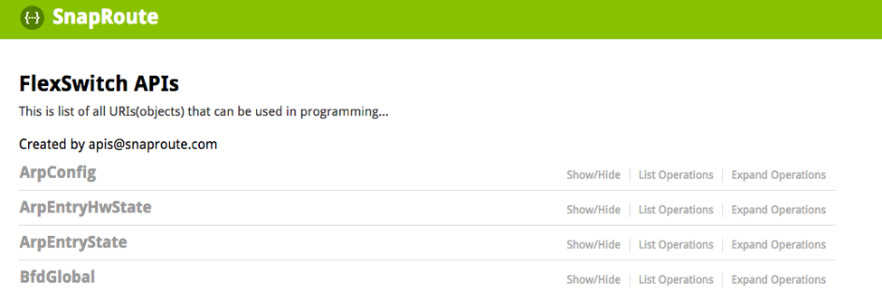Browser Based JSON:
APIs can be called in a web browser directly with the data presented in JSON. A JSON plugin, such as JSONView for Chrome can be used to format the JSON in a more readable format.
APIs are categorized by being either a “state” or “config” object:
http://10.1.10.43:8080/public/v1/state/{object} http://10.1.10.43:8080/public/v1/config/{object}
Config objects are the result of user configuration and represent the desired parameters for configured elements (i.e. what the user wants to the config to be). State objects are the current run-time status of each configured element (i.e. what the status actually is).
Config View:
Using the “config” URL for a given object will yield the parameters that are configured for that object.
This URL can be used to view the configured parameters for all VLANs:
http://10.1.10.43:8080/public/v1/config/Vlans
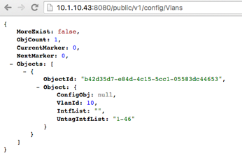The above shows that vlan 10 is configured on 10.1.10.43 with ports 1-46 set as “access” or “untagged”, non-trunked ports in that vlan (UntagIntfList). Also, the UUID for this vlan is returned, which can be used for referencing this vlan in a programmatic fashion. Trunk ports would be defined using IntfList and cannot intersect ports listed under UntagIntfList – meaning that a port cannot be both a trunk and an access port – at the same time.
State View:
Using the “state” URL for a given object will yield the parameters that reflect the “runtime” status of these objects.
This URL can be used to view the state parameters for all VLANs:
http://10.1.10.43:8080/public/v1/state/Vlans
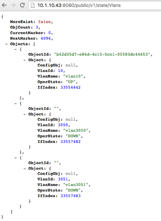The above shows the state information for the configured vlan 10, as well as two internal vlans – 3050 and 3051. These internal vlans are used to represent a layer-3 physical interface (an interface that does not belong to a configured vlan and has an IP assigned directly to it). The OperState shows that vlan 10 is in the “UP” state, while the 2 internal vlans are “DOWN”. Also outlined are the “IfIndex” values for each vlan – which can be used for reference or configuration.
Example Configuration:¶
In this example, 3 new vlans will be created and front-panel ports will be assigned to them.
Using the Swagger UI, information about the “Vlan” API can be displayed:
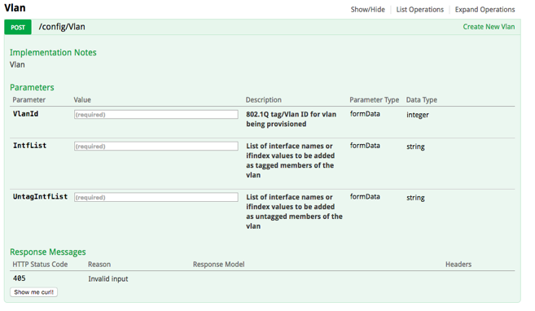This shows that the valid parameters for a POST to the Vlan API are VlanId, IntfList, and UntagIntfList.
This Swagger UI interface can be used to build the curl command to perform the REST call:

The above defines a vlan – 100, with ports 1-10 assigned as untagged or access ports. Swagger UI requires input for both IntfList and UntagIntfList – even though only one parameter is required for this API (hence why “0” is used for the IntfList). Here is the curl command that is generated by Swagger:
curl -X POST --header 'Content-Type: application/json' --header 'Accept: application/json' -d '{"VlanId":"100","IntfList":"0","UntagIntfList":"1-10"}' 'http://your-switchip:8080/public/v1/config/Vlan'
This generated curl command is meant to be used as a reference and needs to be customized to work with FlexSwitch REST APIs:
curl -X POST --header 'Content-Type: application/json' --header 'Accept: application/json' -d '{"VlanId":100,"IntfList":"","UntagIntfList":"1-10"}' 'http://10.1.10.43:8080/public/v1/config/Vlan'
The above reflects these changes:
- “your-switchip” has been changed to 10.1.10.43
- The quotes are removed from 100 as the VlanId needs to be an integer
- The “0” placeholder has been removed from “IntfList” to make a blank list
Enhancements are being made to Swagger UI to make these updates unnecessary.
Also, Swagger UI is also displaying the “Request URL” for this API:
http://your-switchip:8080/public/v1/config/Vlan
This is the URL that can be used in a browser with a JSON viewer to query this API. Note that the URL needs to be updated to the IP of the target device. Also, if a “bulk” get is desired – an “s” can be appended to the API name to return all of the configured vlans.
http://10.1.10.43:8080/public/v1/config/Vlans
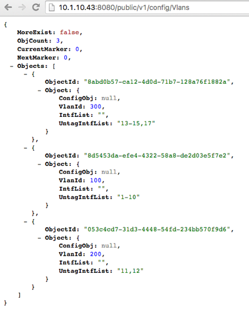These curl commands will create vlans 100, 200, and 300 and assign ports 1-10 to vlan 100, ports 11-12 to vlan 200, and ports 13-15, and 17 to vlan 300:
$ curl -X POST --header 'Content-Type: application/json' --header 'Accept: application/json' -d '{"VlanId":100,"IntfList":"","UntagIntfList":"1-10"}' 'http://10.1.10.43:8080/public/v1/config/Vlan'
{"ObjectId":"8d5453da-efe4-4322-58a8-de2d03e5f7e2","Error":""}
$ curl -X POST --header 'Content-Type: application/json' --header 'Accept: application/json' -d '{"VlanId":200,"IntfList":"","UntagIntfList":"11,12"}' 'http://10.1.10.43:8080/public/v1/config/Vlan'
{"ObjectId":"053c4cd7-31d3-4448-54fd-234bb570f9d6","Error":""}
$ curl -X POST --header 'Content-Type: application/json' --header 'Accept: application/json' -d '{"VlanId":300,"IntfList":"","UntagIntfList":"13-15,17"}' 'http://10.1.10.43:8080/public/v1/config/Vlan'
{"ObjectId":"8abd0b57-ca12-4d0d-71b7-128a76f1882a","Error":""}
The above shows the port-list can be supplied in a flexible matter using hyphenated ranges and comma-separated list of interfaces. Also, notice that a unique “ObjectId” or uuid is returned after each vlan creation and can be used to reference that vlan in future API calls. Finally, all configuration calls will return an Error string, it will be if there is no error (shown above).
Now that there are 3 vlans on the device, IP addresses can be assigned – creating SVIs for each vlan.
Referencing the Swagger UI, notice there is a IPv4Intf API:
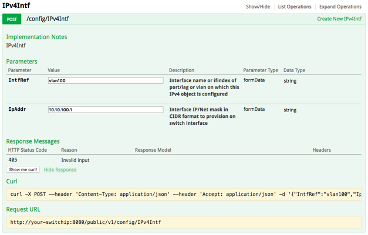This shows the parameters for IPv4Intf are IntRef and IpAddr. IntRef can either be the IfIndex or the name of the interface. For this example, the name of the interface will be used to assign an IP address to each of the 3 vlans:
curl -X POST --header 'Content-Type: application/json' --header 'Accept: application/json' -d '{"IntfRef":"vlan100","IpAddr":"10.10.100.1/24"}' 'http://10.1.10.43:8080/public/v1/config/IPv4Intf'
{"ObjectId":"2491da6c-17e4-461d-50ca-15699eacc318","Error":""}
curl -X POST --header 'Content-Type: application/json' --header 'Accept: application/json' -d '{"IntfRef":"vlan200","IpAddr":"10.10.101.1/24"}' 'http://10.1.10.43:8080/public/v1/config/IPv4Intf'
{"ObjectId":"7469ad42-709d-4315-5877-298e13920f3a","Error":""}
curl -X POST --header 'Content-Type: application/json' --header 'Accept: application/json' -d '{"IntfRef":"vlan300","IpAddr":"10.10.102.1/24"}' 'http://10.1.10.43:8080/public/v1/config/IPv4Intf'
{"ObjectId":"af5355e6-6834-410e-5697-7f7e01dcecc1","Error":""}
Querying for state will show these IP addresses are configured, but the vlan interfaces are in a “DOWN” state:
http://10.1.10.43:8080/public/v1/state/IPv4Intfs
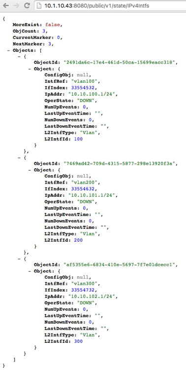A GET query can also be used to display this same information:
$ curl -X GET --header 'Accept: application/json' -d '{}' 'http://10.1.10.43:8080/public/v1/state/IPv4Intfs'
{"MoreExist":false,"ObjCount":3,"CurrentMarker":0,"NextMarker":3,"Objects":[{"ObjectId":"2491da6c-17e4-461d-50ca-15699eacc318","Object":{"ConfigObj":null,"IntfRef":"vlan100","IfIndex":33554532,"IpAddr":"10.10.100.1/24","OperState":"DOWN","NumUpEvents":0,"LastUpEventTime":"","NumDownEvents":0,"LastDownEventTime":"","L2IntfType":"Vlan","L2IntfId":100}},{"ObjectId":"7469ad42-709d-4315-5877-298e13920f3a","Object":{"ConfigObj":null,"IntfRef":"vlan200","IfIndex":33554632,"IpAddr":"10.10.101.1/24","OperState":"DOWN","NumUpEvents":0,"LastUpEventTime":"","NumDownEvents":0,"LastDownEventTime":"","L2IntfType":"Vlan","L2IntfId":200}},{"ObjectId":"af5355e6-6834-410e-5697-7f7e01dcecc1","Object":{"ConfigObj":null,"IntfRef":"vlan300","IfIndex":33554732,"IpAddr":"10.10.102.1/24","OperState":"DOWN","NumUpEvents":0,"LastUpEventTime":"","NumDownEvents":0,"LastDownEventTime":"","L2IntfType":"Vlan","L2IntfId":300}}]}
As shown above, vlan100 is in the “DOWN” state – even though there is a host connected to port 1 on the switch.
Looking at port 1 – the “OperState” of this interface is “DOWN”:
http://10.1.10.43:8080/public/v1/state/Ports
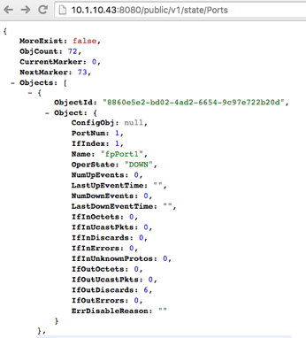This connection is made with a copper SFP, so the speed needs to be specifically set to 1000mbps. Using the ObjectId, a query can be built for this interface:
http://10.1.10.43:8080/public/v1/config/Port/8860e5e2-bd02-4ad2-6654-9c97e722b20d
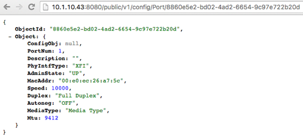Using curl, JSON data can be passed to the API to get port information based on the PortNum, instead of supplying the ObjectId:
$ curl -X GET --header 'Accept: application/json' -d '{"PortNum":1}' 'http://10.1.10.43:8080/public/v1/config/Port'
{"ObjectId":"8860e5e2-bd02-4ad2-6654-9c97e722b20d","Object":{"ConfigObj":null,"PortNum":1,"Description":"","PhyIntfType":"XFI","AdminState":"UP","MacAddr":"00:e0:ec:26:a7:5c","Speed":10000,"Duplex":"Full Duplex","Autoneg":"OFF","MediaType":"Media Type","Mtu":9412}}
Utilizing either query shows the same result – this port is configured for 10000 (10G) – when 1000 is required.
Using a PATCH API call – the speed can be changed from 10000 to 1000, the only required parameters are “PortNum” and “Speed”:
$ curl -X PATCH --header 'Content-Type: application/json' --header 'Accept: application/json' -d '{"PortNum":1,"Speed":1000}' 'http://10.1.10.43:8080/public/v1/config/Port'
{"ObjectId":"8860e5e2-bd02-4ad2-6654-9c97e722b20d","Error":"None."}
Now that the speed is 1000, the port has an OperState of “UP”:
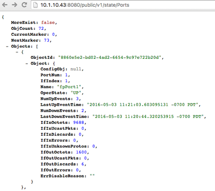Subsequently, the OperState of Vlan 100 is “UP” – since there is now an active port in that vlan:
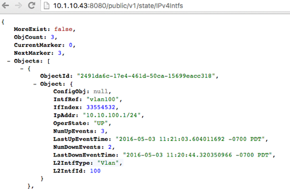In addition to FlexSwitch APIs, these vlans with IP addresses also appear in Linux:
$ ifconfig
vlan100 Link encap:Ethernet HWaddr 00:e0:ec:26:a7:5c
inet addr:10.10.100.1 Bcast:0.0.0.0 Mask:255.255.255.0
UP BROADCAST RUNNING MULTICAST MTU:1500 Metric:1
RX packets:74 errors:0 dropped:0 overruns:0 frame:0
TX packets:1 errors:0 dropped:0 overruns:0 carrier:0
collisions:0 txqueuelen:0
RX bytes:24272 (24.2 KB) TX bytes:42 (42.0 B)
vlan200 Link encap:Ethernet HWaddr 00:e0:ec:26:a7:5c
inet addr:10.10.101.1 Bcast:0.0.0.0 Mask:255.255.255.0
UP BROADCAST RUNNING MULTICAST MTU:1500 Metric:1
RX packets:0 errors:0 dropped:0 overruns:0 frame:0
TX packets:1 errors:0 dropped:0 overruns:0 carrier:0
collisions:0 txqueuelen:0
RX bytes:0 (0.0 B) TX bytes:42 (42.0 B)
vlan300 Link encap:Ethernet HWaddr 00:e0:ec:26:a7:5c
inet addr:10.10.102.1 Bcast:0.0.0.0 Mask:255.255.255.0
UP BROADCAST RUNNING MULTICAST MTU:1500 Metric:1
RX packets:0 errors:0 dropped:0 overruns:0 frame:0
TX packets:1 errors:0 dropped:0 overruns:0 carrier:0
collisions:0 txqueuelen:0
RX bytes:0 (0.0 B) TX bytes:42 (42.0 B)
$ netstat -rn
Kernel IP routing table
Destination Gateway Genmask Flags MSS Window irtt Iface
0.0.0.0 10.1.10.3 0.0.0.0 UG 0 0 0 eth0
10.1.10.0 0.0.0.0 255.255.255.0 U 0 0 0 eth0
10.10.100.0 0.0.0.0 255.255.255.0 U 0 0 0 vlan100
Now that the SVI for vlan 100 is “UP” – it has an entry in the hardware routing table, as is programmed on the ASIC:
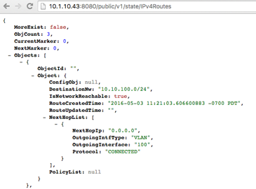Clear Configuration¶
To clear all FlexSwitch configurations, the Redis database needs to be flushed and the FlexSwitch service restarted.
- Enter the CLI for Redis:
$ sudo redis-cli flushdb OK
- Restart FlexSwitch service:
$ sudo service flexswitch restart * Restarting flexswitch flexswitch
This process will be automated in a future release and integrated into /etc/init.d/flexswitch – by utilizing “sudo service flexswitch clear-config”. This will cause FlexSwitch to restart with an empty Redis database.
Configuration via JSON File¶
In addition to configuring FlexSwitch via API calls – it is also possible to supply a configuration file formatted in JSON.
For, example this JSON file will configure these parameters from the previous examples:
- 3 Vlans are created:
- Vlan 100, ports 1-10 with IP address 10.10.100.1/24
- Vlan 200, ports 11,12 with IP address 10.10.101.1/24
- Vlan 300, ports 13-15, and 17 with IP address 10.10.102.1/24
- Speed is set to 1G for port 1
Example desiredConfig.json:
{ "Vlan": [ { "UntagIntfList": "1-10", "IntfList": "", "VlanId": 100 }, { "UntagIntfList": "11,12", "IntfList": "", "VlanId": 200 }, { "UntagIntfList": "13-15,17", "IntfList": "", "VlanId": 300 } ], "IPv4Intf": [ { "IntfRef": "vlan100", "IpAddr": "10.10.100.1/24" }, { "IntfRef": "vlan200", "IpAddr": "10.10.101.1/24" }, { "IntfRef": "vlan300", "IpAddr": "10.10.102.1/24" } ], "Port": [ { "PortNum": 1, "Speed": 1000 } ] }
This JSON file is declarative and not order-dependent – all configurations are ingested at once and executed in the order required.
Configuration files are parsed and executed using the “monitor.py” python app:
- Add JSON configuration to desiredConfig.json (creating the file, if necessary):
- Apply the configuration using monitor.py in the /opt/flexswitch/apps/cfgmon directory:
Now that the configuration is applied, the operational state can be verified:
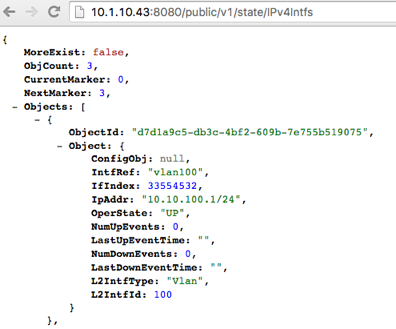Ansible Integration¶
Utilizing the JSON file method, it is possible to utilize automation tools like Ansible to manage FlexSwitch configurations.
Prerequisites: Prior to utilizing Ansible to manage FlexSwitch, a working Ansible environment needs to be built.
- Follow the Operating System appropriate instructions to install Ansible on the desired host:
- Generate an SSH key for Ansible to use for managing devices:
- ::
$ ssh-keygen
For the purposes of this guide a passphrase is not used and the key is stored in the default location: /home/ansible/.ssh/id_rsa.pub.
- This generated SSH key needs to be added to the root user of the device, enabling SSH management by Ansible:
- Add target host to /etc/ansible/hosts:
- The ssh key can be tested by issuing a “ping” from Ansible:
$ ansible -u root -m ping all 10.1.10.43 | SUCCESS => { "changed": false, "ping": "pong" } The above shows a successful ping response using the remote user of root, as that is the user that houses the SSH key on the target system.
Managing FlexSwitch:
Now that Ansible is installed and working with the device – it is possible to manage FlexSwitch configurations.
This example will deploy the JSON configuration filed referenced previously.
- Confirm target host is listed in the Ansible inventory file:
- Create directories for playbooks, templates, and host_vars:
Convert the previously deployed JSON configuration into a template:
Ansible uses the Jinja2 Python templating language for building variable-based configuration files.
Jinja2 uses this syntax for specifying a variable in a template file:
{{ variable_name }}Using this method of templating – the JSON configuration from the previous example can be templatized:
{ "Vlan": [ { "UntagIntfList": "{{ vlan_1_port_range }}", "IntfList": "", "VlanId": {{ vlan_1 }} }, { "UntagIntfList": "{{ vlan_2_port_range }}", "IntfList": "", "VlanId": {{ vlan_2 }} }, { "UntagIntfList": "{{ vlan_3_port_range }}", "IntfList": "", "VlanId": {{ vlan_3 }} } ], "IPv4Intf": [ { "IntfRef": "vlan{{ vlan_1 }}", "IpAddr": "{{ vlan_1_ip }}/{{ vlan_cidr_bits }}" }, { "IntfRef": "vlan{{ vlan_2 }}", "IpAddr": "{{ vlan_2_ip }}/{{ vlan_cidr_bits }}" }, { "IntfRef": "vlan{{ vlan_3 }}", "IpAddr": "{{ vlan_3_ip }}/{{ vlan_cidr_bits }}" } ], "Port": [ { "PortNum": 1, "Speed": {{ port_1_speed }} } ] }Save the above template in this location:
/etc/ansible/templates/flexswitch_example.j2Assign values to the variables used in the template:
Ansible has a flexible structure for assigning variables to hosts and groups, allowing for a hierarchy to be built.
For this example, variables will be defined for this specific target host:
vlan_1: 100 vlan_2: 200 vlan_3: 300 vlan_1_port_range: 1-10 vlan_2_port_range: 11,12 vlan_3_port_range: 13-15,17 vlan_1_ip: 10.10.100.1 vlan_2_ip: 10.10.101.1 vlan_3_ip: 10.10.102.1 vlan_cidr_bits: 24 port_1_speed: 1000Save the above lines to this file:
/etc/ansible/host_vars/10.1.10.43Build Ansible playbook:
With the template and host_vars files in place, all that is required is an Ansible playbook that builds the FlexSwitch config file and deploys it to the target device.
- This playbook will do the following:
- Use apt-get to install FlexSwitch (if it is not already installed)
- Ensure that FlexSwitch is currently running
- Build the desiredConfig.json file based on the flexswitch_example.j2 template
- Whenever there is a change to desiredConfig.json (i.e. a variable or the template is updated) – the monitory.py application is run to apply the new configuration
Example Ansible playbook:
--- - hosts: all remote_user: root tasks: - name: ensure flexswitch is installed apt: name: flexswitch=0.0.92 state: present update_cache: yes force: yes - name: ensure flexswitch is running service: name: flexswitch state: started - name: configure flexswitch template: src: /etc/ansible/templates/flexswitch_example.j2 dest: /opt/flexswitch/desiredConfig.json force: yes notify: - load flexswitch config handlers: - name: load flexswitch config command: chdir=/opt/flexswitch/apps/cfgmon python monitor.py --applyConfig=TrueThe above assumes that apt-get has been configured to point to a repo that contains the FlexSwitch package (in this case version 0.0.92) or that FlexSwitch has been manually installed.
This playbook should be saved as:
/etc/ansible/playbooks/flexswitch.yml
Run playbook to configure FlexSwitch:
Using the ansible-playbook command – the previously configured playbook can be run to apply FlexSwitch configs to the target host:
$ ansible-playbook flexswitch.yml PLAY [all] ********************************************************************* TASK [setup] ******************************************************************* ok: [10.1.10.43] TASK [ensure flexswitch is installed] ****************************************** ok: [10.1.10.43] TASK [ensure flexswitch is running] ******************************************** changed: [10.1.10.43] TASK [configure flexswitch] **************************************************** changed: [10.1.10.43] RUNNING HANDLER [load flexswitch config] *************************************** changed: [10.1.10.43] PLAY RECAP ********************************************************************* 10.1.10.43 : ok=5 changed=3 unreachable=0 failed=0This output shows that the playbook was successfully applied to 10.1.10.43, indicating which tasks caused changes to be applied. Since this is the first run of the playbook and the target device had no configurations – the result is “changed” for each of the configuration tasks.
A subsequent run – where neither the variables or the template is updated results in a playbook run where nothing is changed:
$ ansible-playbook flexswitch.yml PLAY [all] ********************************************************************* TASK [setup] ******************************************************************* ok: [10.1.10.43] TASK [ensure flexswitch is installed] ****************************************** ok: [10.1.10.43] TASK [ensure flexswitch is running] ******************************************** changed: [10.1.10.43] TASK [configure flexswitch] **************************************************** ok: [10.1.10.43] PLAY RECAP ********************************************************************* 10.1.10.43 : ok=4 changed=1 unreachable=0 failed=0 Note: The “ensure flexswitch is running” task may show “changed” even if FlexSwitch is already running (it will not reload FlexSwitch).Now that the configuration is applied via Ansible, the operational state can be verified:
http://10.1.10.43:8080/public/v1/state/IPv4Intfs